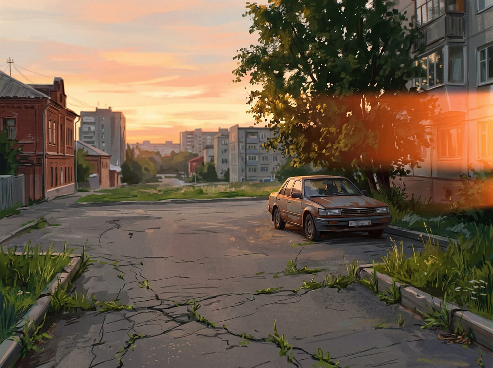
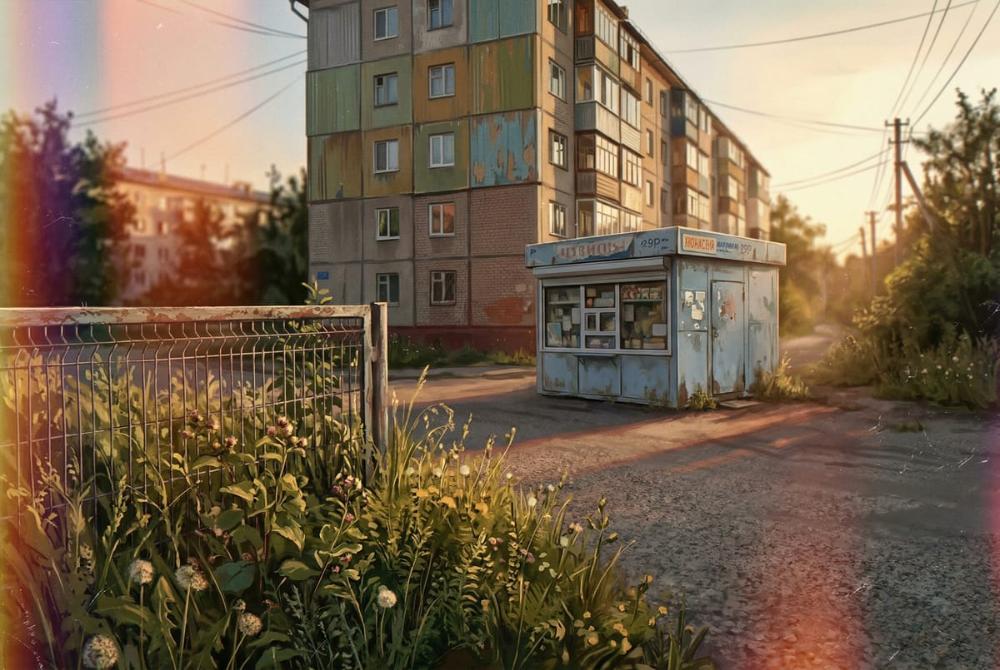
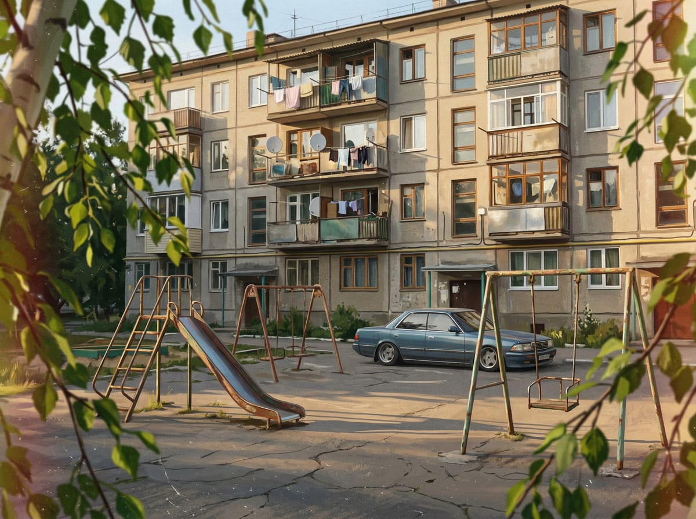

Спальный район хрущёвок и 9-этажных панелек. Бедность, мелкая преступность, аптека с решётками. Сломанные качели, потрескавшийся асфальт, бабки на лавочках.Dormitory district of Khrushchyovkas and 9-story panelkas. Poverty, petty crime, pharmacy with barred windows. Broken swings, cracked asphalt, grandmothers on benches.




